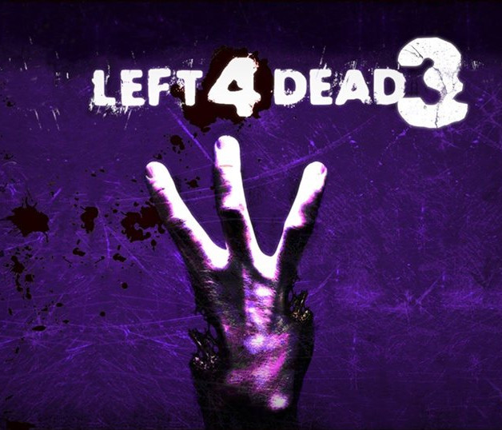

Joueurs Left for Dead - Inscriptions terminées
Ils sont de retour !!!
Pour cette troisième édition de la COnvention INoubliable, les zombies reviennent envahir le campus de Lille 1, plus nombreux, plus forts, plus dévastateurs que jamais !

Saurez-vous les affronter ? Survivrez-vous à cette nuit de l'enfer ? Ou ferez-vous partie de ces dévoreurs de cerveaux, mus par la faim, le carnage... et peut-être autre chose ?
Cette année, c'est nouvelle formule : réparties sur le campus, deux bases s'affronteront durant 4 heures.
Un camp de survivants, scientifiques et militaires retranchés depuis l'apparition des zombies sur le campus, mais d'où viennent-ils ?? Mystère...
Et un camp de cadavéreux, se déplaçant en hordes, prêts à frapper à tout moment, répondant à de mystérieux ordres...
Différents objectifs, différentes missions animeront les deux camps, mais sans doute seront-ils amenés à se rencontrer sitôt sur le terrain... Qui finira par l'emporter ? A l'issue de cette soirée de l'épouvante le monde sera-t-il sauvé ou condamné ?
Vous seuls pouvez en décider ! Alors n'hésitez plus et rejoignez :
LEFT FOR DEAD 3 : THE INCOMING RACE
Pour confirmer votre inscription, il faut remplir ce formulaire.
Retrouvez également toutes les informations et posez vos questions sur l'événement facebook .